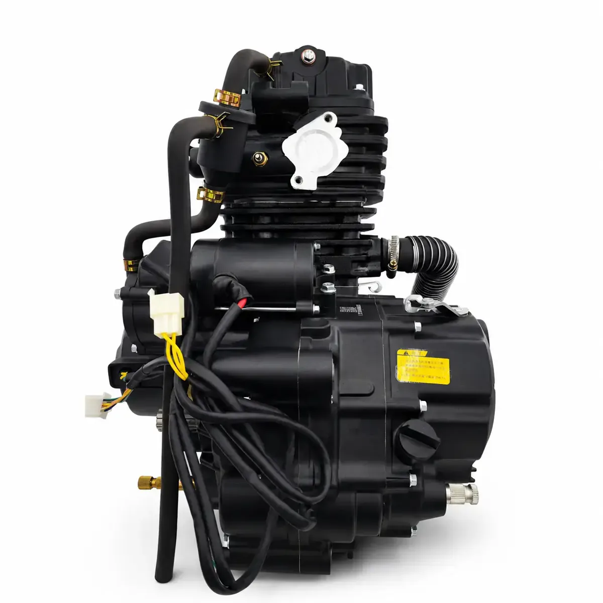

موتور أسياخ OHV · هواء وماء
محركات CG125 إلى CG250 وتروسيكلات HW
محركات أسياخ عملية (CG125، CG150، CG200 بقدرة 10 كيلوواط / 13.5 نيوتن·متر، CG250SB) وسلسلة التبريد المائي الثقيلة HW200–HW350 مع خيار عمود التوازن.
CHIXIANG MOTOR · مصنع تشونغتشينغ (خبرة منذ عام 2003)
مصنع مباشر في تشونغتشينغ متخصص في محركات الأسياخ CG (تبريد هواء وماء)، محركات الكاتينة CB (OHC)، المحركات الأفقية 110–150 سي سي، محركات التروسيكل الثقيلة بتبريد المياه HW200–HW350 وبدائل باجاج بوكسر وتوك توك RE 4S و TVS HLX. اختبار بارد وساخن 100% على المنصة وتجميع حاويات مختلطة من 50 وحدة FOB قوانغتشو.
خبرة تصنيعية منذ 2003 · الشركة مسجلة رسمياً في تشونغتشينغ عام 2007
طاقة إنتاجية شهرية ثابتة لتلبية طلبات المستوردين وخطوط التجميع
اختبار منصة بارد وساخن 100% قبل الشحن + معملان للداينو والانبعاثات
ادمج الموديلات الكاملة وقطع الغيار الأساسية داخل حاوية واحدة
اختر فئة المحرك أو انتقل مباشرة إلى مواصفات الطرازات الأكثر طلباً في أسواق التوفيقية والرصيف باء وموزعي التروسيكلات والتوك توك.
محركات أسياخ عملية (CG125، CG150، CG200 بقدرة 10 كيلوواط / 13.5 نيوتن·متر، CG250SB) وسلسلة التبريد المائي الثقيلة HW200–HW350 مع خيار عمود التوازن.

عمود كامات علوي بجنزير كاتينة هادئ (125cc إلى 250cc)، ارتفاع مدمج 452 مم، وعزم أعلى لدراجات الطرق والصحراء حتى 12 كيلوواط في طراز CB250.

سعات فعلية دقيقة: 106.7 مل، 107 مل، 123.67 مل (فئة 130)، 140 مل و149.8 مل (CX1P60FMJ بدائرة زيت داخلية بالسلندر دون مبرد خارجي).

محركات كاملة وقطع غيار مطابقة لمقاسات OEM (فخذتين كارتيرة، وش سلندر، سلندر وشنبر، كرنك، طقم جوانات) لباجاج بوكسر CT100/BM150 و RE 4S و TVS HLX/King.

سلندرات تبريد مياه، طلمبة مياه، كلتش حر 20 بكرة، كارتيرة زيت 1.5 لتر وتشابه قطع بنحو 80% بين طرازي HW250 و HW300 (سعة 275.3 مل).

أسطوانة واحدة 4 أشواط بتبريد مائي 287.2 سي سي فعلياً (75 × 65 مم، رمز 175MN) مع ناقل CVT أوتوماتيكي وترس رجوع مدمج وكلتش 5 فكوك.
فئة 300 سي سي (275.3 مل) · 12.5 كيلوواط · 21 نيوتن·متر · زيت 1.5 لتر · كلتش 20 بكرة · 5 أمامي + صندوق رجوع خارجي.
10 كيلوواط عند 7,500 لفة · 13.5 نيوتن·متر عند 6,500 لفة · متاح بعمود توازن للدراجات النفعية.
تصميم عملي سهل الصيانة في الورش المحلية مع وفرة شنابر وجوانات وش السلندر.
جيربوكس 4 أو 5 سرعات + فخذتين الكارتيرة (36PF0004/36PF0005) وطقم السلندر والشنابر.
الحد الأدنى للطلب 50 محركاً كاملاً مع إمكانية دمج محركات الأسياخ CG والكاتينة CB والتروسيكل HW وقطع الغيار داخل نفس الحاوية.
شروط التصدير القياسية FOB قوانغتشو (مع دعم الموانئ الصينية الرئيسية حسب الاتفاق) وزمن تجهيز ~10 أيام عمل للمواصفات المعتادة.
تجهيز الفاتورة التجارية وقائمة التعبئة وكشف الأرقام التسلسلية للمحركات، مع رفع مستندات الشحن الإلكترونية عبر CargoX لرقم ACID الصادر من المستورد.
اختبار بارد وساخن 100% ومعملا داينو وفحص صلابة. ضمان 60 يوماً بعد الوصول للميناء مع شحن القطع البديلة مجاناً بالحاوية التالية بعد تحقق الرقم التسلسلي.